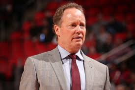
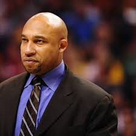
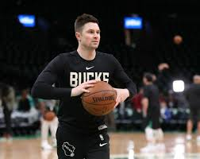

Mike Budenholzer - head coach
Right now the head of the Milwaukee Buck and has been a coach for a combined 27 years. Budenholzer who is commonly referred to by other coachs and players as coach Bud played basketball in college at Pomona College where he was named the Outstanding Senior Athlete in 1993. After college he went to Denmark to play professional basketball for the Veilje Basketball Klub, at the same time that he was playing professional basketball overseas he also started his coach career serving as a head coach for two teams of the clubs youth system. Then a year after spending time in Denmark Bud was hired by the San Antonio Spurs as a video coordinator where he held that position for two years before he was names an assistant coach under Greg Popovich. At the Spurs Bud help the spurs win four NBA championships help grow his resume as a coach and leading him to take his frist NBA head coach position with the Atlanta Hawks. In Atlanta he won his first NBA coach of the year award in 2014 and lead the Hawks to a franchise record 60 wins, and their deepest playoff run in 48 years. In 2018 the Hawks and Bud decided to part ways which opened him up to take his current role as Head Coach of the Milwaukee Bucks. In His first year as a head coach at Milwaukee he won his second coach of the year award and also lead the bucks the easter conference finals. This season was his second as head coach of the Bucks, Leading the bucks as they once again finished 1st in the central devision but had a disappointing loss in the conference semifinals of the NBA playoffs.
Darvin Ham
Ham started out as a player in the NBA having a 10 year career and even playing for the Bucks from 1999-2002. He started his coaching career in 2008 being an assistant coach for the Albuquerque Thunderbirds, A NBA development team and later on served as their head coach. In 2011 he became an assistant coach for the Los Angeles Lakes where he worked in a player development role. After Los Angeles he went to another assistant coaching job under Bud with the Atlanta Hawks in 2013. After Bud and the Hawks decided to part ways Ham was also disbanded from the Hawks, but got his current job as assistant coach of the Bucks once again under Bud.
Joshua Longstaff
Longstaff started his coaching career as a high school coach at Gorham High school. In 2010 He joined the Oklahoma city Thunder where he served as player personnel, video coordinator, video analyst, and player development coach for 4 years. After the Thunder he spend 4 years with the New York Knicks as an assistant coach. As an assistant coach for the knicks he joined the Latvia national Basketball team for the summer of 2017 so that he could work work with Kristaps Porzingis. After he was fired from the Knicks he was names the first head coach of the expansion Erie BayHawks which is the Atlanta Hawks NBA G league affiliate. After his head coaching job of the BayHawks Longstaff was hired on as assistant coach under Bud for the Milwaukee bucks.
Charles Lee
Lee was a former professional player who spent most of his time in Isreal and Europe. His coaching career started at his alma mater Bucknell as an assistant for 2 years. In 2013 he was hired to his first professional coaching job as an assistant coach for the Atlanta Hawks where he worked until 2018. He starting working as a assitant coach for the Milwaukee Bucks in 2018.
Ben Sullivan
Sullivan started as a video intern with the San Antonia Spurs. Today he is respected shooting coach around the league and has a critical role trying to help the Milwaukee Bucks star player and two time reigning MVP work on his shooting.
Ben Sullivan
Sullivan started as a video intern with the San Antonia Spurs. Today he is respected shooting coach around the league and has a critical role trying to help the Milwaukee Bucks star player and two time reigning MVP work on his shooting.
Patrick St. Andrews
St. Andrews started his career working under Bud in Atlanta. Starting as a Assitant Video Coordinator in 2013 he worked his way up to a Assitant coach postition in 2016. Much like many of the other assistant coaches on the Bucks St. Andrews was brought brought over by coach Bud from the Hawks in 2018 to the Bucks.
Vin Baker
Baker was a former NBA player getting drafted by the Milwaukee Bucks in 1993 and spent 13 years in the league playing for 6 different teams. Baker had a very successful career playing in the NBA and was a 4 time NBA All-Start. Baker was brought on to be an assistant coach for the Bucks in 2018.